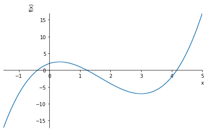
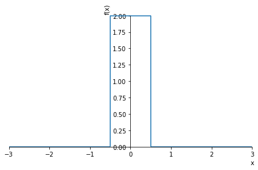
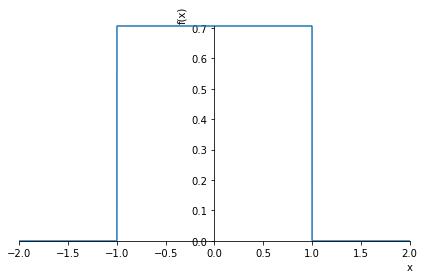
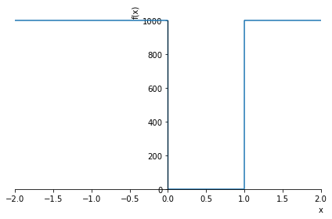
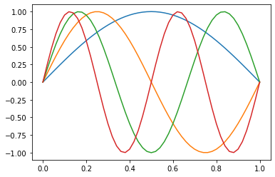

Lab 2: Computação Simbólica em Python
Neste notebook veremos como utilizar recursos de computação algébrica, com expressões analíticas, dentro do ambiente Jupyter notebook. Para isso, usaremos a biblioteca SymPy. A intenção aqui é fornecer uma introdução básica ao tema, concentrando-se em como usar esses recursos no contexto do nosso curso. Para mais informações, você pode consultar a excelente documentação do SymPy que está disponível online. Um bom ponto de partida é o Tutorial do SymPy.
Em particular, não deixe de ler Gotchas!, para evitar problemas comuns de sintaxe!! 😉
Computação Simbólica
A computação simbólica envolve a computação de objetos matemáticos simbolicamente. Isso significa que os objetos matemáticos são representados exatamente, não aproximadamente, e expressões matemáticas com variáveis não avaliadas são deixadas em forma simbólica, ou algébrica.
Para entender a diferença veja os exemplos abaixo
import math
print('A raiz de 9 é:', math.sqrt(9))
print('A raiz de 8 é:', math.sqrt(8))
A raiz de 9 é: 3.0
A raiz de 8 é: 2.8284271247461903
import sympy
print('A raiz de 9 é:', sympy.sqrt(9))
print('A raiz de 8 é:', sympy.sqrt(8))
A raiz de 9 é: 3
A raiz de 8 é: 2*sqrt(2)
Na aula passada, alguém perguntou porque o seno de \pi não era exatamente zero num dos resultados. Expliquei que isso era devido a aproximação finita que sempre existe ao representar um número no computador. As ferramentas de computação algébrica (CAS - Computer Algebra System ), como o SymPy, usam recursos especiais para representar um número sem aproximações na memória do computador. Isso vem com um custo computacional, mas é bastante útil em várias situações, como veremos. Veja abaixo como SymPy avalia o \text{sen}(\pi)
sympy.sin(sympy.pi) # resultado do seno de pi, com o SymPy
\displaystyle 0
math.sin(math.pi) # resultado do seno de pi, com a biblioteca padrão do Python
1.2246467991473532e-16
Além de eliminar os erros de arredondamento, a computação algébrica permite manipular algebricamente expressões matemática e até mesmo aplicar ferramentas de Cálculo, como derivadas e integrais. Veremos exemplos mais adiante.
🤔 Como usar? - variáveis simbólicas
De maneira bem resumida, além de carregar a biblioteca SymPy e aprender sua sintaxe, o primeiro passo principal é definir uma variável como simbólica, como é mostrado nos exemplos abaixo:
import sympy
x, y, z, t = sympy.symbols('x y z t')
Agora os identificadores (variáveis) "x, y, z, t" são variáveis simbólicas e serão tratadas como objetos sympy, e não mais como identificadores usuais do Python. Podemos, então definir funções com essas variáveis e usá-las em expressões algébricas. O exemplo abaixo, calcula a derivada de e^{-2x^2}:
sympy.diff(sympy.exp(-2*x**2))
\displaystyle - 4 x e^{- 2 x^{2}}
Para simplificar a sintaxe, e evitar ficar digitando sympy. o tempo todo, podemos carregar as funções diretamente (mas cuidado com isso!!), ou usar uma atalho (alias), com já mostramos na última aula. Aqui, para simplificar, eu vou carregar todas as funções que usaremos neste tutorial, na linha abaixo.
from sympy import sin, cos, exp, diff, integrate, series, solve, pi, Matrix, simplify,oo
diff(exp(-2*x**2))
\displaystyle - 4 x e^{- 2 x^{2}}
Podemos usar solve para resolver equações, como, por exemplo x^2 - 8 = 0
solve(x**2 - 8,x)
[-2*sqrt(2), 2*sqrt(2)]
para tornar a apresentação das resposta mais agradável, podemos usar o comando
sympy.init_printing(use_latex=True)
solve(x**2 - 8,x)
\displaystyle \left[ - 2 \sqrt{2}, \ 2 \sqrt{2}\right]
Ou simplificar expressões algébricas
sympy.pprint((x**3 + x**2 - x - 1)/(x**2 + 2*x + 1))
simplify((x**3 + x**2 - x - 1)/(x**2 + 2*x + 1))
3 2
x + x - x - 1
───────────────
2
x + 2⋅x + 1
\displaystyle x - 1
Funções e gráficos
A forma mais simples de definir uma função no SymPy é simplesmente definir uma nova variável atribuindo uma expressão com variáveis simbólicas
expr = x**3 -5*x**2 + 3*x + 2
expr
\displaystyle x^{3} - 5 x^{2} + 3 x + 2
sympy.plot(expr,(x,-1.5,5)); # é fácil plotar o gráfico de uma função

Para mais informações veja a documentação online.
Matrizes
É possível definir matrizes com o comando Matrix()
M = Matrix([[1,2],[1,0]]) # define M com a nossa velha conhecida matriz...
M
\displaystyle \left[\begin{matrix}1 & 2\\1 & 0\end{matrix}\right]
M.det() # calcula o determinante da matriz M
\displaystyle -2
M.inv() # matriz inversa
\displaystyle \left[\begin{matrix}0 & 1\\\frac{1}{2} & - \frac{1}{2}\end{matrix}\right]
M.eigenvals() # autovalores
\displaystyle \left\{ -1 : 1, \ 2 : 1\right\}
M.eigenvects() # autovetores
\displaystyle \left[ \left( -1, \ 1, \ \left[ \left[\begin{matrix}-1\\1\end{matrix}\right]\right]\right), \ \left( 2, \ 1, \ \left[ \left[\begin{matrix}2\\1\end{matrix}\right]\right]\right)\right]
sympy.eye(4) # matriz identidade de ordem 4
\displaystyle \left[\begin{matrix}1 & 0 & 0 & 0\\0 & 1 & 0 & 0\\0 & 0 & 1 & 0\\0 & 0 & 0 & 1\end{matrix}\right]
Podemos também definir uma matriz de variáveis e funções simbólicas! 😉
G = Matrix([[x**2,y+x],[2*x**3*y, 5*y**3]])
G
\displaystyle \left[\begin{matrix}x^{2} & x + y\\2 x^{3} y & 5 y^{3}\end{matrix}\right]
Para mais informações e recursos, veja a documentação online. Vale a pena ver a parte de diagonalização.
Cálculo
Vejamos alguns exemplos de como usar sympy em Cálculo...
Derivadas
diff(sin(x)*exp(x), x)
\displaystyle e^{x} \sin{\left(x \right)} + e^{x} \cos{\left(x \right)}
diff(exp(2*x),x,3) # calcula a terceira derivada de exp(2*x)
\displaystyle 8 e^{2 x}
Podemos aplicar derivadas em objetos mais complexos, como matrizes, por exemplo.
diff(G,x) # a matriz G foi definida acima
\displaystyle \left[\begin{matrix}2 x & 1\\6 x^{2} y & 0\end{matrix}\right]
Para calcular derivadas parciais, como \frac{\partial^2}{\partial x \partial y} e^{(x^2+y^3)}
diff(exp(x**2+y**3),x,y) # derivadas parciais com relação a x e y
\displaystyle 6 x y^{2} e^{x^{2} + y^{3}}
Integração
- integrais indefinidas: integrate(expr, variável)
- integrais definidas: integrate(expr, (var_int, lim_inf, lim_sup))
integrate(cos(x),x)
\displaystyle \sin{\left(x \right)}
# integral de uma gaussiana no intervalo {0,oo}
integrate(exp(-x**2),(x,0,oo)) # O símbolo "oo" representa infinito
\displaystyle \frac{\sqrt{\pi}}{2}
Há ainda outra forma de definir de a integral, que pode ser conveniente
integral = sympy.Integral(sin(x**2),x)
integral
\displaystyle \int \sin{\left(x^{2} \right)}\, dx
A variável integral representa a integração indicada acima. Para realizar o cálculo, pode-se usar .doit()
integral.doit()
\displaystyle \frac{3 \sqrt{2} \sqrt{\pi} S\left(\frac{\sqrt{2} x}{\sqrt{\pi}}\right) \Gamma\left(\frac{3}{4}\right)}{8 \Gamma\left(\frac{7}{4}\right)}
O método .doit() pode ser usado em outros contextos também.
Séries de potências
Podemos facilmente expandir em série de Taylor, usando o comando series()
series(exp(x))
\displaystyle 1 + x + \frac{x^{2}}{2} + \frac{x^{3}}{6} + \frac{x^{4}}{24} + \frac{x^{5}}{120} + O\left(x^{6}\right)
Se definirmos uma expressão (ou função), podemos fazer a sua expansão usando o método .series(). Neste caso, a sintaxe geral tem a forma: f(x).series(x, x0, n), onde x0 indica o ponto de expansão e n indica a ordem da expansão.
expr = exp(-2*x**2)
expr.series(x,0,9)
\displaystyle 1 - 2 x^{2} + 2 x^{4} - \frac{4 x^{6}}{3} + \frac{2 x^{8}}{3} + O\left(x^{9}\right)
Séries de Fourier
Também é possível expandir em Série de Fourier. Para isso, vamos carregar a função
from sympy import fourier_series
s = fourier_series(x**2)
s
\displaystyle - 4 \cos{\left(x \right)} + \cos{\left(2 x \right)} + \frac{\pi^{2}}{3} + \ldots
#sympy.init_printing(pretty_print=True,use_unicode=True)
s1 = fourier_series(x**2)
s2 = fourier_series(x**3)
sympy.pprint(s1)
sympy.pprint(s2)
2
π
-4⋅cos(x) + cos(2⋅x) + ── + …
3
⎛ 3⎞
⎛ 3 3⋅π⎞ ⎜ 4⋅π 2⋅π ⎟
⎛ 3⎞ ⎜- π + ───⎟⋅sin(2⋅x) ⎜- ─── + ────⎟⋅sin(3⋅x)
⎝-12⋅π + 2⋅π ⎠⋅sin(x) ⎝ 2 ⎠ ⎝ 9 3 ⎠
───────────────────── + ───────────────────── + ─────────────────────── + …
π π π
É possível definir melhor o ponto de expansão, o intervalo e a ordem da expansão
s = fourier_series(x**2, (x,-pi,pi))
s.truncate(5)
\displaystyle - 4 \cos{\left(x \right)} + \cos{\left(2 x \right)} - \frac{4 \cos{\left(3 x \right)}}{9} + \frac{\cos{\left(4 x \right)}}{4} + \frac{\pi^{2}}{3}
Transformada de Fourier
from sympy import fourier_transform, exp
from sympy.abc import x, k
fourier_transform(exp(-3*x**2), x, k)
\displaystyle \frac{\sqrt{3} \sqrt{\pi} e^{- \frac{\pi^{2} k^{2}}{3}}}{3}
Para mais detalhes e informações, consulte a documentação online.
Exemplos e exercícios
Exemplo 1
Vamos resolver aqui o Exemplo 2.6 do livro do Griffiths, para ilustrar alguns recursos interessantes.
Para mais aprender mais sobre Funções Especiais do sympy, veja a documentação online.
from sympy import Heaviside, DiracDelta, plot, symbols, oo, Eq, sqrt, pi, exp, sin
psi, A, a = symbols('psi, A, a')
h = A*(Heaviside(x+a)-Heaviside(x-a))
plot(h.subs(((a,1),(A,1))) ,(x,-3,3));
plot(h.subs(((a,0.5),(A,2))) ,(x,-3,3));


psi = h/sqrt(2*a)
psi
#psi1 = psi.subs(((A,1),(a,1)))
#psi1
\displaystyle \frac{\sqrt{2} A \left(- \theta\left(- a + x\right) + \theta\left(a + x\right)\right)}{2 \sqrt{a}}
psi1 = psi.subs(((A,1),(a,1)))
plot(psi1,(x,-2,2));

phi = (1/sqrt(2*pi))*(1/sqrt(2*a))*integrate(exp(-1j*k*x),(x,-a,a))
phi
\displaystyle \frac{\begin{cases} - \frac{1.0 i e^{1.0 i a k}}{k} + \frac{1.0 i e^{- 1.0 i a k}}{k} & \text{for}\: k > -\infty \wedge k < \infty \wedge k \neq 0 \\2 a & \text{otherwise} \end{cases}}{2 \sqrt{\pi} \sqrt{a}}
phi.simplify()
\displaystyle \begin{cases} \frac{1.0 \sin{\left(1.0 a k \right)}}{\sqrt{\pi} \sqrt{a} k} & \text{for}\: k > -\infty \wedge k < \infty \wedge k \neq 0 \\\frac{\sqrt{a}}{\sqrt{\pi}} & \text{otherwise} \end{cases}
phi1 = phi.subs(a,1)
plot(phi1,(k,-10,10));

Exemplo 2
from sympy import Heaviside, Function, symbols, plot, simplify, exp, sin, pi
from sympy import integrate, dsolve, Eq, Derivative as D
x, k, a, A, n = symbols('x, k, a, A, n', real=True)
psi = Function('psi')(x)
V = 1000*(1-(Heaviside(x)-Heaviside(x-1)))
plot(V,(x,-2,2));

eq = Eq(D(psi,x,x) + k**2*psi,0)
eq
\displaystyle k^{2} \psi{\left(x \right)} + \frac{d^{2}}{d x^{2}} \psi{\left(x \right)} = 0
dsolve(eq,psi)
\displaystyle \psi{\left(x \right)} = C_{1} \sin{\left(x \left|{k}\right| \right)} + C_{2} \cos{\left(k x \right)}
Ao analisar a solução acima, nos limites em que x=0 e x=a, onde \psi \rightarrow 0, temos que
e
Como pode-se verificar
psi = A*sin(n*pi*x/a)
norma = integrate(psi*psi, (x,0,a)).simplify()
norma
\displaystyle \begin{cases} \frac{A^{2} a \left(\pi n - \frac{\sin{\left(2 \pi n \right)}}{2}\right)}{2 \pi n} & \text{for}\: \frac{\pi n}{a} \neq 0 \\0 & \text{otherwise} \end{cases}
solve(Eq( norma.subs(n,1) ,1),A )
\displaystyle \left[ - \sqrt{2} \sqrt{\frac{1}{a}}, \ \sqrt{2} \sqrt{\frac{1}{a}}\right]
Portanto, a condição de normalização resulta em A=\sqrt{\frac{2}{a}}, e os estados estacionários são
Para visualizar estes estados, podemos fazer a=1 e plotar para n=1,2,3
psi.subs(((A,1),(a,1)))
\displaystyle \sin{\left(\pi n x \right)}
import numpy as np
import matplotlib.pyplot as plt
x = np.linspace(0,1,51)
for k in range(1,5):
plt.plot( x, np.sin(k*np.pi*x) )
